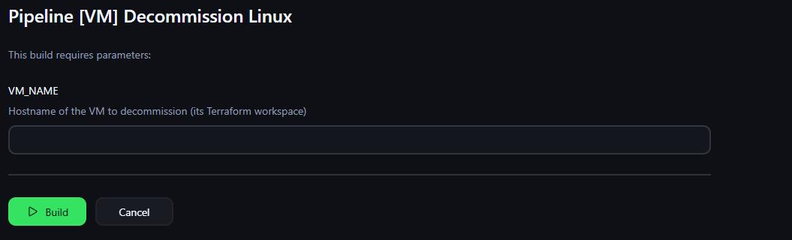

Linux cleanup
Release the address, remove the Zabbix host, remove forward and reverse DNS records, then delete the empty Terraform workspace.
A decommission request removes the selected virtual machine, releases its address, stops monitoring it, removes its name records, clears its infrastructure state, and updates the durable inventory. The job will not ask for approval unless the saved Terraform plan proves that it contains a deletion. If the plan is empty, unreadable, or aimed at a workspace that does not exist, the workflow stops instead of reporting a successful teardown that changed nothing. The plan validator is proven by offline fixtures; a verified live decommission run is still owed.
Built from the current Linux and Windows decommission Jenkinsfiles, their runbooks, the destroy-plan validator, regression fixtures, and the incident record that explains why the content check exists.
The operator supplies the machine name because that name is also the Terraform workspace. A workspace is the isolated state record for one machine. Selecting it tells Terraform which infrastructure record to read and prevents a request for one server from silently drifting into another server’s state.

The first stages validate the name, check out the reviewed automation, select the matching workspace, and read the machine’s recorded address. Terraform then creates a saved destroy plan. Nothing has been deleted yet. The plan is a reviewable description of what Terraform intends to remove, and the same saved file is applied after approval so the request cannot be approved against one plan and executed against another.
Linux and Windows use the same control path. Windows adds two cleanup responsibilities because the machine also has an Active Directory computer object and a per-host monitoring key.
This is the gate that says no. Terraform can exit successfully when a destroy plan contains no changes. That behavior is useful for some automation, but it is dangerous here because a green decommission could leave the requested machine running. The pipeline therefore converts the saved plan to structured JSON and checks its contents before it sends an approval request.
The machine name selects one isolated Terraform state record. A missing workspace fails here.
The validator scans the plan’s action list for a delete, including replacement actions that delete and recreate.
The exact saved plan can continue to the human gate.
No approval email, no apply, and no cleanup that could dismantle the wrong records.
The workspace proves which machine is targeted. The plan validator proves that Terraform intends to delete something from that machine’s state. Both checks must pass. A successful command exit by itself is not enough.
The validator has three outcomes. A readable plan containing a delete passes. A readable plan with no delete reports that the destroy plan is empty. A missing, truncated, or malformed plan reports that the evidence cannot be trusted. Both non-passing outcomes stop the stage.
The human gate comes after this machine check. Jenkins emails the machine name and recorded address, then waits for an explicit destroy action. The wait is bounded. Rejecting the request or letting the approval expire stops before Terraform applies the plan. The human decides whether the requested destruction is appropriate; the code proves there is an actual destruction to review.
Destroying the VM is only the middle of the job. A provisioned server is represented in Git, Terraform state, the hypervisor, address management, monitoring, DNS, and sometimes Active Directory. Decommissioning has to reverse those records without making an address or machine identifier reusable too early.
The durable host record is retired before scarce resources are released. The VM is destroyed before integrations are removed. The final workspace delete is another refusal gate: Terraform will not erase a workspace that still contains resources.
The host manifest is the reviewed inventory record stored in Git. Removing it requires a small pull request whose checks must pass and whose merge must be visible on the main branch. If that merge fails, the workflow stops while the VM and its address still exist. This prevents another provisioning run from reusing an address or machine identifier while the old record remains current.
Once Terraform applies the destroy plan, the machine no longer needs an address reservation, a Zabbix host, or DNS records. Windows also no longer needs an Active Directory computer object. These operations are keyed on the same machine name and are written to tolerate a record that is already absent. That makes a rerun the recovery mechanism after a partial failure.
Release the address, remove the Zabbix host, remove forward and reverse DNS records, then delete the empty Terraform workspace.
Perform the Linux cleanup, remove the Active Directory computer object, and delete the per-host Zabbix key. Keep the local administrator credential so a restored backup remains accessible.
| System | What it owns | What decommission does | How failure is handled |
|---|---|---|---|
| Jenkins | The request form, ordered stages, approval gate, run log, and result notification | Coordinates the teardown and records the stage where it stopped. | A failed stage prevents later stages from running. The next run starts from the same machine name. |
| Git and Gitea | The reviewed host manifest and automation | Removes the machine record through a checked pull request before releasing the VM or address. | An unmerged record removal stops the destructive path while the machine is still intact. |
| Terraform and PostgreSQL | The per-machine infrastructure state and saved destroy plan | Selects the machine workspace, proves the plan contains a deletion, applies that plan, then deletes the empty workspace. | A missing workspace, empty plan, unreadable plan, failed apply, or non-empty final workspace stops loudly. |
| Proxmox | The virtual machine and its disks | Receives the approved delete through the Terraform provider. | A lock or provider error leaves later cleanup untouched so records still describe the surviving machine. |
| NetBox | The address reservation | Returns the recorded address to the available pool after the VM is gone. | A failed release leaves the address reserved. A rerun can safely try again. |
| Zabbix | The monitored host and its per-host identity | Deletes the host so a retired machine does not page as down. Windows also removes its stored monitoring key. | An already-absent host is a safe no-op. A service failure leaves a visible cleanup stage to rerun. |
| DNS and Active Directory | Forward and reverse name records, plus the Windows computer object | Removes the records that made the machine reachable and removes the Windows directory object when applicable. | Missing records are skipped. An unreachable directory service fails the stage and preserves the remaining cleanup for a rerun. |
| Vault | Runtime credentials and per-host secrets | Supplies narrowly scoped credentials to the stages that call each owning system. | A credential read failure stops the stage. Secret values never enter Git or the public run description. |
The path is manual and destructive, so it runs only from a named request and an explicit approval. Recovery is completion, not rollback. Once a machine is destroyed, recreating it automatically would be a new provisioning decision.
| When | What runs | What happens next |
|---|---|---|
| On request | The job validates the machine name, selects its workspace, reads the recorded address, and creates the destroy plan. | A missing or malformed target stops before an approval request is sent. |
| When the plan is empty or unreadable | The content validator returns a refusal result. | The job fails loudly. It does not ask a person to approve a no-op and it does not remove surrounding records. |
| On approval | The host-manifest removal is merged, then Terraform applies the exact saved plan. | After the VM is gone, the job releases its address and removes monitoring, directory, DNS, secret, and workspace records as applicable. |
| On failure before destruction | The stage log records the failed gate, merge, provider, or approval step. | The VM and its supporting records remain. Correct the named dependency and rerun. |
| On failure after destruction | The VM stays gone and completed cleanup steps stay complete. | The remaining records are intentionally left visible. Rerunning the idempotent stages finishes the reversal. |
| On rerun | The job repeats the same name-based checks and no-ops on records already removed. | The first incomplete cleanup stage does the remaining work. There is no automatic reconstruction of a destroyed machine. |
The pipeline selected a workspace, tolerated an expected missing legacy-image state entry, and then accepted Terraform’s successful empty plan. Applying that plan also exited successfully, so Jenkins sent a decommissioned message even though no resource had been removed. Two live runs exposed the false-success path.
The first suspicion was a bad destroy target. The Jenkinsfile did not use a destroy target. The message came from a legacy state-cleanup command whose error was intentionally tolerated. The real defect was that nothing asserted the resulting plan contained a delete. I added the plan-content validator instead of hiding the message more neatly.
The address lookup also discarded its error and converted any failure into an empty value. Later cleanup interpreted that as no address to release. The revised path preserves the reason in the log and makes the skipped release visible instead of presenting a fully clean result.